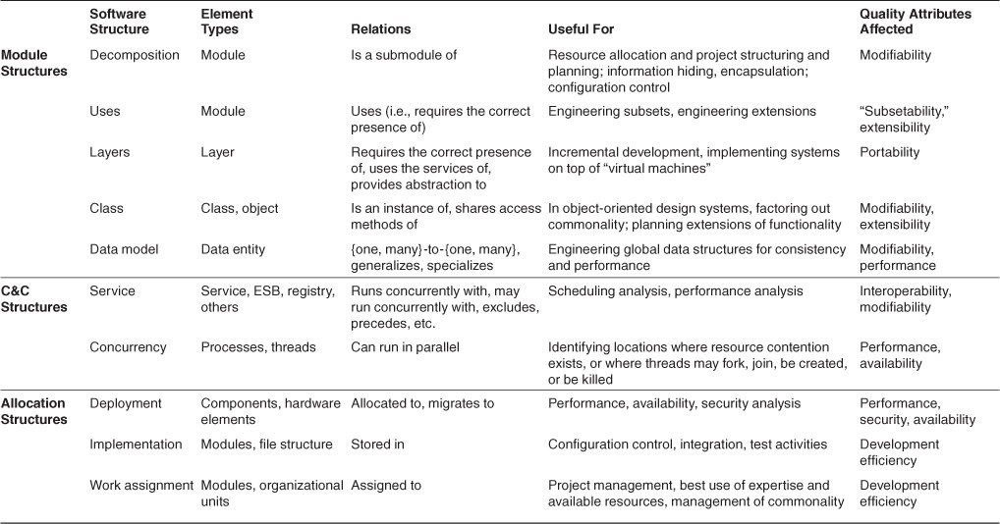

name: inverse layout: true class: center, middle, inverse --- # Arquitetura de Software - Aula 01 ## Prof. Marc Queiroz --- layout: false class: inverse, middle ## 1. O que é arquitetura de software? *O bom julgamento é geralmente o resultado da experiência. E a experiência é frequentemente o resultado de um mau julgamento. Mas aprender com a experiência de outros requer que aqueles que têm experiência compartilhem o conhecimento com aqueles que os seguem.* —Barry LePatner --- layout: false class: inverse, middle Para se ler um material sobre arquitetura de software, que destila a experiência de muitas pessoas, pressupõe que 1. ter uma arquitetura de software é importante para o desenvolvimento bem-sucedido de um sistema de software e 2 . há um corpo suficiente, e suficientemente generalizáveis, de conhecimento sobre arquitetura de software para encher um livro. --- layout: false class: inverse, middle Um dos objetivos deste material é convencê-lo de que ambas as suposições são verdadeiras e, uma vez que estiver convencido, dar-lhe um conhecimento básico para que você mesmo possa aplicá-lo. --- layout: false class: inverse, middle Os sistemas de software são construídos para satisfazer os objetivos de negócios das organizações. A arquitetura é uma ponte entre esses objetivos de negócios (geralmente abstratos) e o sistema resultante (concreto) final. Embora o caminho de objetivos abstratos para sistemas concretos possa ser complexo, a boa notícia é que as arquiteturas de software podem ser projetadas, analisadas, documentadas e implementadas usando técnicas conhecidas que apoiarão a realização desses objetivos de negócios e missão. A complexidade pode ser domada, tornada tratável. --- layout: false class: inverse, middle Estes, então, são os tópicos desta disciplina: o projeto, a análise, a documentação e a implementação de arquiteturas. Também examinaremos as influências, principalmente na forma de objetivos de negócios e atributos de qualidade, que informam essas atividades. Nesta aula, enfocaremos a arquitetura estritamente do ponto de vista da engenharia de software. Ou seja, exploraremos o valor que uma arquitetura de software traz para um projeto de desenvolvimento. --- layout: false class: inverse, middle ## 1.1. O que é arquitetura de software e o que não é Existem muitas definições de arquitetura de software, facilmente detectáveis com uma pesquisa na web, mas a que gostamos é esta: A arquitetura de software de um sistema é o conjunto de estruturas necessárias para raciocinar sobre o sistema, que compreende elementos de software, relações entre eles e propriedades de ambos. --- layout: false class: inverse, middle Esta definição está em contraste com outras definições que falam sobre as decisões de design “iniciais” ou “principais” do sistema. Embora seja verdade que muitas decisões de arquitetura são feitas antecipadamente, nem todas são - especialmente em projetos de desenvolvimento ágil ou em espiral. Também é verdade que muitas decisões que não são arquitetônicas são tomadas antecipadamente. Além disso, é difícil olhar para uma decisão e dizer se é ou não "importante". Às vezes, só o tempo dirá. E uma vez que escrever uma arquitetura é uma das obrigações mais importantes do arquiteto, precisamos saber agora quais decisões uma arquitetura abrange. --- layout: false class: inverse, middle As estruturas, por outro lado, são bastante fáceis de identificar no software e formam uma ferramenta poderosa para o projeto do sistema. Vejamos algumas das implicações de nossa definição. --- layout: false class: inverse, middle ## Arquitetura é um conjunto de estruturas de software Esta é a primeira e mais óbvia implicação de nossa definição. Uma estrutura é simplesmente um conjunto de elementos mantidos juntos por uma relação. Os sistemas de software são compostos de muitas estruturas, e nenhuma estrutura única afirma ser a arquitetura. Existem três categorias de estruturas arquitetônicas, que desempenham um papel importante no projeto, documentação e análise de arquiteturas: --- layout: false class: inverse, middle 1 . Primeiro, algumas estruturas dividem os sistemas em unidades de implementação, que chamamos de módulos. Os módulos são atribuídos a responsabilidades computacionais específicas e são a base das atribuições de trabalho para equipes de programação (a equipe A trabalha no banco de dados, a equipe B trabalha nas regras de negócios, a equipe C trabalha na interface do usuário, etc.). Em grandes projetos, esses elementos (módulos) são subdivididos para atribuição a subequipes. --- layout: false class: inverse, middle Por exemplo, o banco de dados para uma implementação de (ERP - Enterprise Resource Planning), planejamento de recursos empresariais, pode ser tão complexo que sua implementação é dividida em muitas partes. --- layout: false class: inverse, middle A estrutura que captura essa decomposição é uma espécie de estrutura de módulo. Outro tipo de estrutura de módulo surge como uma saída de análise e design orientado a objetos - diagramas de classes. Se você agregar seus módulos em camadas, terá criado outra estrutura de módulo. Estruturas de módulo são estruturas estáticas, pois focam na maneira como a funcionalidade do sistema é dividida e atribuída às equipes de implementação. --- layout: false class: inverse, middle 2 . Outras estruturas são dinâmicas, o que significa que se concentram na maneira como os elementos interagem entre si em tempo de execução para realizar as funções do sistema. Suponha que o sistema seja construído como um conjunto de serviços. Os serviços, a infraestrutura com a qual eles interagem e as relações de sincronização e interação entre eles formam outro tipo de estrutura frequentemente usada para descrever um sistema. Estes serviços são constituídos (compilados a partir) dos programas nas várias unidades de implementação que acabamos de descrever. --- layout: false class: inverse, middle Neste material, chamaremos estruturas de tempo de execução de estruturas de componente e conector (C&C). O termo componente está sobrecarregado na engenharia de software. Em nosso uso, um componente é sempre uma entidade de tempo de execução. --- layout: false class: inverse, middle 3 . Um terceiro tipo de estrutura descreve o mapeamento das estruturas de software para os ambientes de organização, desenvolvimento, instalação e execução do sistema. Por exemplo, os módulos são atribuídos a equipes para desenvolvimento e atribuídos a locais em uma estrutura de arquivo para implementação, integração e teste. Os componentes são implantados no hardware para serem executados. Esses mapeamentos são chamados de alocação de estruturas. --- layout: false class: inverse, middle Embora o software inclua um suprimento infinito de estruturas, nem todas são arquitetônicas. Por exemplo, o conjunto de linhas de código-fonte que contém a letra “z”, ordenado aumentando o comprimento do mais curto para o mais longo, é uma estrutura de software. Mas não é muito interessante, nem arquitetônico. Uma estrutura é arquitetônica se apoiar o raciocínio sobre o sistema e as propriedades do sistema. O raciocínio deve ser sobre um atributo do sistema que é importante para algumas partes interessadas. --- layout: false class: inverse, middle Isso inclui a funcionalidade alcançada pelo sistema, a disponibilidade do sistema em caso de falhas, a dificuldade de fazer alterações específicas no sistema, a capacidade de resposta do sistema às solicitações do usuário e muitos outros. Passaremos muito tempo neste livro sobre a relação entre arquitetura e atributos de qualidade como esses. Assim, o conjunto de estruturas arquitetônicas não é fixo ou limitado. O que é arquitetural é o que é útil em seu contexto para seu sistema. --- layout: false class: inverse, middle # Arquitetura é uma abstração Como a arquitetura consiste em estruturas e estruturas consistem em elementos e relações, segue-se que uma arquitetura compreende elementos de software e como os elementos se relacionam entre si. Isso significa que a arquitetura omite especificamente certas informações sobre elementos que não são úteis para raciocinar sobre o sistema em particular, omite informações que não têm ramificações fora de um único elemento. Assim, uma arquitetura é antes de tudo uma abstração de um sistema que seleciona certos detalhes e suprime outros. --- layout: false class: inverse, middle Em todos os sistemas modernos, os elementos interagem entre si por meio de interfaces que particionam os detalhes sobre um elemento em partes públicas e privadas. --- layout: false class: inverse, middle A arquitetura se preocupa com o lado público dessa divisão; os detalhes privados dos elementos - detalhes relacionados exclusivamente à implementação interna - não são arquiteturais. Além de apenas interfaces, porém, a abstração arquitetural nos permite olhar para o sistema em termos de seus elementos, como eles são organizados, como eles interagem, como são compostos, quais são suas propriedades que suportam o raciocínio do nosso sistema e assim por diante. Essa abstração é essencial para domar a complexidade de um sistema - simplesmente não podemos, e não queremos, lidar com toda a complexidade o tempo todo. --- layout: false class: inverse, middle ## Todo sistema de software tem uma arquitetura de software Cada sistema pode ser mostrado como compreendendo elementos e relações entre eles para apoiar algum tipo de raciocínio. No caso mais trivial, um sistema é em si um único elemento - uma arquitetura desinteressante e provavelmente não útil, mas uma arquitetura mesmo assim. --- layout: false class: inverse, middle Mesmo que todo sistema tenha uma arquitetura, isso não significa necessariamente que a arquitetura seja conhecida por alguém. Talvez todas as pessoas que projetaram o sistema já tenham ido embora, a documentação desapareceu (ou nunca foi produzida), o código-fonte foi perdido (ou nunca foi entregue) e tudo o que temos é o código binário em execução. Isso revela a diferença entre a arquitetura de um sistema e a representação dessa arquitetura. Como uma arquitetura pode existir independentemente de sua descrição ou especificação, isso aumenta a importância dada à documentação da arquitetura. --- layout: false class: inverse, middle ## A arquitetura inclui comportamento O comportamento de cada elemento é parte da arquitetura na medida em que esse comportamento pode ser usado para pensar sobre o sistema. Esse comportamento incorpora como os elementos interagem uns com os outros, o que é claramente parte de nossa definição de arquitetura. --- layout: false class: inverse, middle Isso nos diz que os desenhos de caixa e linha que são considerados arquiteturas, na verdade não são arquiteturas. Ao olhar para os nomes das caixas (banco de dados, interface gráfica de usuário, executivo, etc.), o leitor pode muito bem imaginar a funcionalidade e o comportamento dos elementos correspondentes. Essa imagem mental se aproxima de uma arquitetura, mas surge da imaginação da mente do observador e se apoia em informações que não estão presentes. --- layout: false class: inverse, middle Isso não significa que o comportamento e o desempenho exatos de cada elemento devam ser documentados em todas as circunstâncias - alguns aspectos do comportamento são refinados e estão abaixo do nível de preocupação do arquiteto. Mas na medida em que o comportamento de um elemento influencia outro elemento ou influencia a aceitabilidade do sistema como um todo, esse comportamento deve ser considerado e documentado como parte da arquitetura de software. --- layout: false class: inverse, middle ## Nem todas as arquiteturas são boas arquiteturas A definição é indiferente quanto ao fato de a arquitetura de um sistema ser boa ou má. Uma arquitetura pode permitir ou impedir que um sistema atinja seus requisitos comportamentais, de atributo de qualidade e de ciclo de vida. Assumindo que não aceitamos tentativa e erro como a melhor maneira de escolher uma arquitetura para um sistema - isto é, escolher uma arquitetura aleatoriamente, construir o sistema a partir dela e, em seguida, hackear e esperar pelo melhor - isso aumenta a importância do projeto de arquitetura. --- layout: false class: inverse, middle ## Arquiteturas de sistema e corporativas Duas disciplinas relacionadas à arquitetura de software são arquitetura de sistema e arquitetura corporativa. Ambas as disciplinas têm preocupações mais amplas do que software e afetam a arquitetura de software por meio do estabelecimento de restrições dentro das quais um sistema de software deve viver. Em ambos os casos, o arquiteto de software de um sistema deve estar na equipe que fornece informações sobre as decisões tomadas sobre o sistema ou a empresa. --- layout: false class: inverse, middle Arquitetura do sistema: um sistema é uma representação de um sistema em que há um mapeamento de funcionalidade em componentes de hardware e software, um mapeamento da arquitetura de software na arquitetura de hardware e uma preocupação com a interação humana com esses componentes. Ou seja, a arquitetura do sistema se preocupa com um sistema total, incluindo hardware, software e humanos. --- layout: false class: inverse, middle Uma arquitetura de sistema determinará, por exemplo, a funcionalidade atribuída a diferentes processadores e o tipo de rede que conecta esses processadores. A arquitetura de software em cada um desses processadores determinará como essa funcionalidade é implementada e como os vários processadores interagem por meio da troca de mensagens na rede. --- layout: false class: inverse, middle Uma descrição da arquitetura do software, conforme mapeada para componentes de hardware e rede, permite raciocinar sobre qualidades como desempenho e confiabilidade. Uma descrição da arquitetura do sistema permitirá raciocinar sobre qualidades adicionais, como consumo de energia, peso e pegada física. Quando um sistema específico é projetado, frequentemente há negociação entre o arquiteto de sistema e o arquiteto de software quanto à distribuição de funcionalidade e, consequentemente, as restrições colocadas na arquitetura de software. --- layout: false class: inverse, middle ## Arquitetura corporativa A arquitetura corporativa é uma descrição da estrutura e do comportamento dos processos, fluxo de informações, pessoal e subunidades organizacionais de uma organização, alinhada com os objetivos centrais e a direção estratégica da organização. Uma arquitetura corporativa não precisa incluir sistemas de informação - claramente as organizações tinham arquiteturas que se encaixavam na definição anterior antes do advento dos computadores, exceto as menores empresas, são impensáveis sem o suporte do sistema de informações. --- layout: false class: inverse, middle Portanto, uma arquitetura empresarial moderna preocupa-se com a forma como os sistemas de software de uma empresa oferecem suporte aos processos e objetivos de negócios da empresa. Normalmente incluído neste conjunto de preocupações está um processo para decidir quais sistemas com quais funcionalidades devem ser suportadas por uma empresa. --- layout: false class: inverse, middle Uma arquitetura corporativa irá especificar o modelo de dados que vários sistemas usam para interagir, por exemplo. Ele especificará regras para como os sistemas da empresa interagem com sistemas externos. O software é apenas uma das preocupações da arquitetura corporativa. Duas outras preocupações comuns abordadas pela arquitetura corporativa são como o software é usado por humanos para realizar processos de negócios e os padrões que determinam o ambiente computacional. --- layout: false class: inverse, middle Às vezes, a infraestrutura de software que dá suporte à comunicação entre sistemas e com o mundo externo é considerada uma parte da arquitetura corporativa; outras vezes, essa infraestrutura é considerada um dos sistemas dentro de uma empresa. Essas duas visões resultarão em diferentes estruturas de gerenciamento e esferas de influência para os indivíduos preocupados com a infraestrutura. --- layout: false class: inverse, middle O sistema e a empresa fornecem ambientes e restrições à arquitetura de software. A arquitetura de software deve residir no sistema e na empresa e, cada vez mais, é o foco para atingir os objetivos de negócios da organização. Mas todas as três formas de arquitetura compartilham importantes pontos em comum: elas se preocupam com os principais elementos tomados como abstrações, as relações entre os elementos e como os elementos juntos atendem aos objetivos comportamentais e de qualidade da coisa que está sendo construída. --- layout: false class: inverse, middle # 1.2. Estruturas arquitetônicas e visões --- layout: false class: inverse, middle O neurologista, o ortopedista, o hematologista e o dermatologista têm visões diferentes da estrutura do corpo humano. Oftalmologistas, cardiologistas e podólogos se concentram em subsistemas específicos. E o cinesiologista e o psiquiatra estão preocupados com diferentes aspectos do comportamento de todo o arranjo. Embora essas visões sejam retratadas de maneira diferente e tenham propriedades muito diferentes, todas estão intrinsecamente relacionadas, interconectadas: juntas, elas descrevem a arquitetura do corpo humano. A Figura 1.1 mostra várias visões diferentes do corpo humano: o esquelético, o vascular e o raio-X. --- layout: false class: inverse, middle  ##### Figura 1.1. Estruturas fisiológicas (imagens Getty: Brand X Pictures [esqueleto], Don Farrall [mulher], Mads Abildgaard [homem]) --- layout: false class: inverse, middle Assim é com o software. Os sistemas modernos são freqüentemente complexos demais para serem compreendidos de uma só vez. Em vez disso, restringimos nossa atenção a qualquer momento a uma (ou a um pequeno número) das estruturas do sistema de software. Para comunicar de forma significativa sobre uma arquitetura, devemos deixar claro qual estrutura ou estruturas estamos discutindo no momento que visão estamos tendo da arquitetura. --- layout: false class: inverse, middle ## Estruturas e visualizações Usaremos os termos relacionados à estrutura e visualização ao discutir a representação da arquitetura. • Uma visualização é uma representação de um conjunto coerente de elementos arquitetônicos, conforme escrito e lido pelas partes interessadas do sistema. Consiste na representação de um conjunto de elementos e das relações entre eles. • Uma estrutura é o próprio conjunto de elementos, conforme existem no software ou hardware. --- layout: false class: inverse, middle Resumindo, uma visão é a representação de uma estrutura. Por exemplo, um módulo de estrutura é o conjunto de módulos do sistema e sua organização. Um módulo de visão é a representação dessa estrutura, documentada de acordo com um modelo em uma notação escolhida e usada por alguns participantes do sistema. Portanto: Arquitetos projetam estruturas. Eles documentam visões dessas estruturas. --- layout: false class: inverse, middle ## Três tipos de estruturas Como vimos na seção anterior, as estruturas arquitetônicas podem ser divididas em três categorias principais, dependendo da natureza ampla dos elementos que mostram. Eles correspondem aos três tipos gerais de decisões que o projeto arquitetônico envolve: --- layout: false class: inverse, middle 1 . Estruturas de módulo incorporam decisões sobre como o sistema deve ser estruturado como um conjunto de unidades de código ou dados que devem ser construídos ou adquiridos. Em qualquer estrutura de módulo, os elementos são módulos de algum tipo (talvez classes, ou camadas, ou simplesmente divisões de funcionalidade, todos os quais são unidades de implementação). Os módulos representam uma forma estática de considerar o sistema. Os módulos são áreas de responsabilidade funcional atribuídas; há menos ênfase nessas estruturas em como o software resultante se manifesta no tempo de execução. --- layout: false class: inverse, middle As estruturas dos módulos nos permitem responder a perguntas como estas: • Qual é a principal responsabilidade funcional atribuída a cada módulo? • Que outros elementos de software um módulo pode usar? • De que outro software ele realmente usa e do qual depende? --- layout: false class: inverse, middle • Quais módulos estão relacionados a outros módulos por relações de generalização ou especialização (ou seja, herança)? --- layout: false class: inverse, middle As estruturas dos módulos transmitem essas informações diretamente, mas também podem ser usadas por extensão para fazer perguntas sobre o impacto no sistema quando as responsabilidades atribuídas a cada módulo mudam. Em outras palavras, examinar as estruturas de módulo de um sistema - isto é, observar suas visualizações de módulo - é uma maneira excelente de raciocinar sobre a capacidade de modificação de um sistema. --- layout: false class: inverse, middle 2 . As estruturas de componentes e conectores incorporam decisões sobre como o sistema deve ser estruturado como um conjunto de elementos que possuem comportamento em tempo de execução (componentes) e interações (conectores). Nessas estruturas, os elementos são componentes de tempo de execução (que são as unidades principais de computação e podem ser serviços, pares, clientes, servidores, filtros ou muitos outros tipos de elementos de tempo de execução) e conectores (que são os veículos de comunicação entre componentes, como como retorno de chamada, operadores de sincronização de processo, tubos ou outros). --- layout: false class: inverse, middle As visualizações de componentes e conectores nos ajudam a responder a perguntas como: • Quais são os principais componentes em execução e como eles interagem no tempo de execução? • Quais são os principais armazenamentos de dados compartilhados? • Quais partes do sistema são replicadas? • Como os dados progridem no sistema? --- layout: false class: inverse, middle • Quais partes do sistema podem funcionar em paralelo? • A estrutura do sistema pode mudar à medida que é executado e, em caso afirmativo, como? Por extensão, as visualizações de componente e conector são crucialmente importantes para fazer perguntas sobre as propriedades de tempo de execução do sistema, como desempenho, cenários, status e saldo atual. Um relacionamento pode ditar que um cliente pode ter uma ou mais contas e uma conta está associada a um ou dois clientes. --- layout: false class: inverse, middle 3 . As estruturas de alocação incorporam decisões sobre como o sistema se relaciona com as estruturas que não são de software em seu ambiente (como CPUs, sistemas de arquivos, redes, equipes de desenvolvimento, etc.). Essas estruturas mostram a relação entre os elementos do software e os elementos em um ou mais ambientes externos nos quais o software é criado e executado. As visualizações de alocação nos ajudam a responder a perguntas como estas: • Em qual processador cada elemento de software é executado? --- layout: false class: inverse, middle • Em quais diretórios ou arquivos cada elemento é armazenado durante o desenvolvimento, teste e construção do sistema? • Qual é a atribuição de cada elemento de software às equipes de desenvolvimento? --- layout: false class: inverse, middle ## As estruturas fornecem insight As estruturas desempenham um papel muito importante em nossa perspectiva sobre a arquitetura de software devido ao poder analítico e de engenharia que possuem. Cada estrutura fornece uma perspectiva de raciocínio sobre alguns dos atributos de qualidade relevantes. Por exemplo: --- layout: false class: inverse, middle • A estrutura de “usos” do módulo, que incorpora quais módulos usam quais outros módulos, está fortemente ligada à facilidade com que um sistema pode ser expandido ou contraído. • A estrutura de simultaneidade, que incorpora paralelismo dentro do sistema, está fortemente ligada à facilidade com a qual um sistema pode ser feito sem deadlock e gargalos de desempenho. • A estrutura de implantação está fortemente ligada ao cumprimento das metas de desempenho, disponibilidade e segurança. --- layout: false class: inverse, middle E assim por diante. Cada estrutura fornece ao arquiteto uma visão diferente do projeto (ou seja, cada estrutura pode ser analisada por sua capacidade de fornecer um atributo de qualidade). Cada estrutura apresenta ao arquiteto um ponto de alavancagem de engenharia: ao projetar as estruturas de forma adequada, os atributos de qualidade desejados emergem. --- layout: false class: inverse, middle Por exemplo, um engenheiro de software que deseja fazer uma mudança na estrutura de simultaneidade de um sistema precisa consultar as visualizações de simultaneidade e implantação, porque os mecanismos afetados geralmente envolvem processos e threads, e a distribuição física pode envolver mecanismos de controle diferentes dos que seriam usados se os processos foram colocados em uma única máquina. Se os mecanismos de controle precisarem ser alterados, a decomposição do módulo precisará ser consultada para determinar a extensão das alterações. --- layout: false class: inverse, middle ## Algumas estruturas úteis de C&C As estruturas de componentes e conectores mostram uma visualização do sistema em tempo de execução. Nessas estruturas, os módulos descritos acima foram todos compilados em formas executáveis. Todas as estruturas de componentes e conectores são, portanto, ortogonais às estruturas baseadas em módulo e lidam com os aspectos dinâmicos de um sistema em execução. A relação entre todas as estruturas de componentes e conectores é a fixação, mostrando como os componentes e os conectores trabalham juntos. --- layout: false class: inverse, middle (Os próprios conectores podem ser construções familiares, como “invoca”.) Estruturas C&C úteis incluem o seguinte: • Estrutura de serviço. As unidades aqui são serviços que interoperam entre si por mecanismos de coordenação de serviço, como SOAP. A estrutura de serviço é uma estrutura importante para ajudar a projetar um sistema composto de componentes que podem ter sido desenvolvidos de forma anônima e independente uns dos outros. --- layout: false class: inverse, middle • Estrutura de simultaneidade. Essa estrutura de componentes e conectores permite ao arquiteto determinar as oportunidades de paralelismo e os locais onde pode ocorrer a contenção de recursos. As unidades são componentes e os conectores são seus mecanismos de comunicação. Os componentes são organizados em threads lógicos; um thread lógico é uma sequência de cálculos que podem ser alocados a um thread físico separado posteriormente no processo de design. A estrutura de simultaneidade é usada no início do processo de design para identificar os requisitos para gerenciar os problemas associados à execução simultânea. --- layout: false class: inverse, middle Algumas estruturas de alocação úteis As estruturas de alocação definem como os elementos de C&C ou estruturas de módulo são mapeados para coisas que não são software: normalmente hardware, equipes e sistemas de arquivos. Estruturas de alocação úteis incluem: --- layout: false class: inverse, middle • Estrutura de implantação. A estrutura de implantação mostra como o software é atribuído ao processamento de hardware e aos elementos de comunicação. Os elementos são elementos de software (geralmente um processo de uma visão C&C), entidades de hardware (processadores) e caminhos de comunicação. As relações são alocadas, mostrando em quais unidades físicas os elementos de software residem, e para as quais migram se a alocação for dinâmica. Essa estrutura pode ser usada para refletir sobre desempenho, integridade de dados, segurança e disponibilidade. É de particular interesse em sistemas distribuídos e paralelos. --- layout: false class: inverse, middle • Estrutura de implementação. Esta estrutura mostra como os elementos de software (geralmente módulos) são mapeados para a(s) estrutura(s) de arquivo nos ambientes de desenvolvimento, integração ou controle de configuração do sistema. Isso é crítico para o gerenciamento de atividades de desenvolvimento e processos de construção. (Na prática, uma captura de tela de sua ferramenta de ambiente de desenvolvimento, que gerencia o ambiente de implementação, geralmente é um diagrama muito útil e suficiente para sua visualização de implementação.) --- layout: false class: inverse, middle • Estrutura de atribuição de trabalho. Essa estrutura atribui a responsabilidade pela implementação e integração dos módulos às equipes que a realizarão. Ter uma estrutura de atribuição de trabalho como parte da arquitetura deixa claro que a decisão sobre quem faz o trabalho tem implicações arquitetônicas e de gerenciamento. O arquiteto conhecerá os conhecimentos necessários para cada equipe. --- layout: false class: inverse, middle Além disso, em grandes projetos de desenvolvimento distribuído com várias fontes, a estrutura de atribuição de trabalho é o meio para chamar unidades de comunalidade funcional e atribuí-las a uma única equipe, em vez de implementá-las por todos que precisam delas. Essa estrutura também determinará as principais vias de comunicação entre as equipes: teleconferências regulares, wikis, listas de e-mail e assim por diante. --- layout: false class: inverse, middle A Tabela 1.1 resume essas estruturas. A tabela lista o significado dos elementos e relações em cada estrutura e informa para que cada um pode ser usado. --- layout: false class: inverse, middle  Tabela 1.1. Estruturas arquitetônicas úteis --- layout: false class: inverse, middle Cada uma dessas estruturas fornece uma perspectiva diferente e uma parte de design em um sistema, e cada uma é válida e útil por si só. Embora as estruturas forneçam diferentes perspectivas de sistema, elas não são independentes. Os elementos de uma estrutura estão relacionados a elementos de outras estruturas, e precisamos raciocinar sobre essas relações. Por exemplo, um módulo em uma estrutura de decomposição pode ser manifestado como parte de um ou vários componentes em uma das estruturas de componente e conector, refletindo seu alter ego de tempo de execução. Em geral, os mapeamentos entre estruturas são de muitos para muitos. --- layout: false class: inverse, middle A Figura 1.2 mostra um exemplo muito simples de como duas estruturas podem se relacionar. A figura à esquerda mostra uma visão de decomposição do módulo de um minúsculo sistema cliente-servidor. Neste sistema, dois módulos devem ser implementados: O software cliente e o software servidor. A figura à direita mostra uma visualização de componente e conector do mesmo sistema. Em tempo de execução, há dez clientes executando e acessando o servidor. Assim, este pequeno sistema possui dois módulos e onze componentes (e dez conectores). --- layout: false class: inverse, middle  Figura 1.2. Duas visões de um sistema cliente-servidor --- layout: false class: inverse, middle Enquanto a correspondência entre os elementos na estrutura de decomposição e a estrutura cliente-servidor é óbvia, essas duas visões são usadas para coisas muito diferentes. Por exemplo, a visualização à direita poderia ser usada para análise de desempenho, previsão de gargalos e gerenciamento de tráfego de rede, o que seria extremamente difícil ou impossível de fazer com a visualização à esquerda. --- layout: false class: inverse, middle Projetos individuais às vezes consideram uma estrutura dominante e elenco outras estruturas, quando possível, em termos da estrutura dominante. Freqüentemente, a estrutura dominante é a estrutura de decomposição do módulo. Por um bom motivo: isso tende a gerar a estrutura do projeto, porque reflete a estrutura da equipe de desenvolvimento. Em outros projetos, a estrutura dominante pode ser uma estrutura C&C que mostra como a funcionalidade do sistema e / ou atributos críticos de qualidade são alcançados. --- layout: false class: inverse, middle ## Menos é melhor Nem todos os sistemas justificam a consideração de muitas estruturas arquitetônicas. Quanto maior o sistema, mais dramática tende a ser a diferença entre essas estruturas; mas para sistemas pequenos, muitas vezes podemos sobreviver com menos. Em vez de trabalhar com cada uma das várias estruturas de componentes e conectores, geralmente basta uma única. Se houver apenas um processo, a estrutura do processo se reduz a um único nó e não precisa ser explicitamente representada no design. --- layout: false class: inverse, middle Se não houver distribuição (ou seja, se o sistema for implementado em um único processador), a estrutura de implantação é trivial e não precisa ser considerada posteriormente. Em geral, projete e documente uma estrutura somente se isso trouxer um retorno positivo sobre o investimento, geralmente em termos de redução dos custos de desenvolvimento ou manutenção. --- layout: false class: inverse, middle ## Quais estruturas escolher? Descrevemos resumidamente uma série de estruturas arquitetônicas úteis e há muitas mais. Quais dessas estruturas deve um arquiteto escolher para trabalhar? Quais devem o arquiteto escolher para documentar? Certamente, nem todos eles. Por enquanto, uma boa resposta é que você deve pensar sobre as várias estruturas disponíveis para você fornecer uma visão e alavancagem dos atributos de qualidade mais importantes do sistema e, em seguida, escolher aqueles que irão desempenhar o melhor papel na entrega desses atributos. --- layout: false class: inverse, middle ## Pergunte a Cal (Texto suplementar) Há mais de uma década, fui ao site de um cliente para fazer uma avaliação de arquitetura - uma das primeiras instâncias do Architecture Tradeoff Analysis Method (ATAM) que já executei. Naqueles primeiros dias, ainda estávamos descobrindo como tornar as avaliações de arquitetura repetíveis e previsíveis e como garantir resultados úteis delas. Uma das maneiras de garantir resultados úteis foi aplicar certas pré-condições na avaliação. Uma pré-condição que descobrimos rapidamente foi esta: se a arquitetura não foi documentada, não prosseguiremos com a avaliação. --- layout: false class: inverse, middle A razão para esta pré-condição era simples: não poderíamos avaliar a arquitetura lendo o código - não tínhamos tempo para isso - e não podíamos simplesmente pedir ao arquiteto para esboçar a arquitetura em tempo real, já que isso produziria representações vagas e muito provavelmente errôneas. --- layout: false class: inverse, middle Ok, não é totalmente verdade dizer que eles não tinham documentação de arquitetura. Eles produziram um diagrama de uma única página, com algumas caixas e linhas. Algumas dessas caixas eram, no entanto, nuvens. Sim, eles realmente usaram uma nuvem como um de seus ícones. Quando os pressionei sobre o significado deste ícone - foi um processo? Uma aula? Um fio? Não era, de fato, documentação de arquitetura. Foi, na melhor das hipóteses, um "marketing". --- layout: false class: inverse, middle Mas naqueles primeiros dias não tínhamos pré-requisitos e por isso não paramos a avaliação por aí. Nós apenas entramos alegremente em qualquer pântano que encontramos e não aplicamos nada. Quando comecei esta avaliação, entrevistei alguns dos principais interessados no projeto: o gerente de projeto e vários dos arquitetos (este foi um grande projeto com um arquiteto-chefe e vários subordinados). Acontece que o arquiteto-chefe estava ausente e, portanto, passei meu tempo com os arquitetos subordinados. Cada vez que eu fazia aos subordinados uma pergunta difícil: --- layout: false class: inverse, middle - “Como você garante que irá cumprir sua meta de latência ao longo deste caminho de execução crítico?” ou “Quais são as suas regras para camadas?” - Eles responderam: “Pergunte ao Cal. Cal sabe disso. ” Cal foi o arquiteto principal. Imediatamente notei um risco para este sistema: e se Cal for atropelado por um ônibus? --- layout: false class: inverse, middle No final, por causa da minha importunação, a equipe de arquitetura de fato produziu uma documentação de arquitetura respeitável. Na metade da avaliação, o gerente de projeto veio até mim, apertou minha mão e me agradeceu pelo excelente trabalho que fiz. Eu fiquei pasmo. Na minha mente, eu não tinha feito nada naquele momento; a avaliação estava apenas parcialmente concluída e eu não havia produzido um único relatório ou achado. Eu disse isso ao gerente e ele disse: “Você pediu àqueles caras para documentar a arquitetura. Nunca consegui convencê-los a fazer isso. Então . . . obrigado!" --- layout: false class: inverse, middle Se Cal tivesse sido atropelado por um ônibus ou simplesmente saído da empresa, eles teriam um problema sério em suas mãos: todo aquele conhecimento arquitetônico localizado na cabeça de um cara e ele não está mais na organização. Pode acontecer. Isso acontece. --- layout: false class: inverse, middle A moral desta história? Uma arquitetura que não está documentada e não comunicada pode ainda ser uma boa arquitetura, mas os riscos que a rodeiam são enormes. —RK --- layout: false class: inverse, middle # 1.3. Padrões arquitetônicos Em alguns casos, os elementos arquitetônicos são compostos de maneiras que resolvem problemas específicos. As composições foram consideradas úteis ao longo do tempo e em muitos domínios diferentes e, portanto, foram documentadas e disseminadas. Essas composições de elementos arquitetônicos, chamadas de padrões arquitetônicos, fornecem estratégias prontas para resolver alguns dos problemas enfrentados por um sistema. --- layout: false class: inverse, middle Um padrão arquitetônico delineia os tipos de elementos e suas formas de interação usadas na solução do problema. Os padrões podem ser caracterizados de acordo com o tipo de elementos arquitetônicos que utilizam. Por exemplo, um padrão de tipo de módulo comum é este: --- layout: false class: inverse, middle • Padrão em camadas. Quando a relação de uso entre os elementos do software é estritamente unidirecional, surge um sistema de camadas. Uma camada é um conjunto coerente de funcionalidades relacionadas. Em uma estrutura estritamente em camadas, uma camada só pode usar os serviços da camada imediatamente abaixo dela. Muitas variações desse padrão, diminuindo a restrição estrutural, ocorrem na prática. As camadas são frequentemente projetadas como abstrações (máquinas virtuais) que ocultam especificações de implementação abaixo das camadas acima, gerando portabilidade. --- layout: false class: inverse, middle Os padrões de tipo de componente e conector comuns são: • Padrão de dados compartilhados (ou repositório). Esse padrão compreende componentes e conectores que criam, armazenam e acessam dados persistentes. O repositório geralmente assume a forma de um banco de dados (comercial). Os conectores são protocolos para gerenciar os dados, como SQL. --- layout: false class: inverse, middle • Padrão cliente-servidor. Os componentes são os clientes e os servidores, e os conectores são protocolos e mensagens que compartilham entre si para realizar o trabalho do sistema. --- layout: false class: inverse, middle Os padrões de alocação comuns incluem o seguinte: • Padrão multicamadas, que descreve como distribuir e alocar os componentes de um sistema em subconjuntos distintos de hardware e software, conectados por algum meio de comunicação. Este padrão especializa a estrutura de implantação genérica (alocação de software para hardware). --- layout: false class: inverse, middle • Centro de competência e plataforma, que são padrões que especializam a estrutura de atribuição de trabalho de um sistema de software. No centro de competência, o trabalho é alocado aos sites, dependendo da experiência técnica ou de domínio localizada em um site. Por exemplo, o design da interface do usuário é feito em um site onde os especialistas em engenharia de usabilidade estão localizados. Na plataforma, um site tem a tarefa de desenvolver ativos essenciais reutilizáveis de uma linha de produtos de software, e outros sites desenvolvem aplicativos que usam os ativos principais. --- layout: false class: inverse, middle # 1.4. O que torna uma arquitetura “boa”? --- layout: false class: inverse, middle Não existe arquitetura inerentemente boa ou má. As arquiteturas são mais ou menos adequadas para algum propósito. Uma arquitetura orientada a serviços em camadas de três camadas pode ser apenas a passagem para o sistema B2B baseado na web de uma grande empresa, mas completamente errada para um aplicativo de aviônica. Uma arquitetura cuidadosamente elaborada para alcançar alta modificabilidade não faz sentido para um protótipo descartável (e vice-versa!). As arquiteturas podem de fato ser avaliadas - um dos grandes benefícios de se prestar atenção a elas - mas apenas no contexto de objetivos específicos declarados. --- layout: false class: inverse, middle No entanto, existem regras básicas que devem ser seguidas ao projetar a maioria das arquiteturas. A não aplicação de qualquer um deles não significa automaticamente que a arquitetura terá falhas fatais, mas deve pelo menos servir como um sinal de alerta que deve ser investigado. Dividimos nossas observações em dois grupos: recomendações de processo e recomendações de produto (ou estruturais). Nossas recomendações de processo são as seguintes: --- layout: false class: inverse, middle 1 . A arquitetura deve ser o produto de um único arquiteto ou um pequeno grupo de arquitetos com um líder técnico identificado. Essa abordagem dá à arquitetura sua integridade conceitual e consistência técnica. Essa recomendação vale para projetos ágeis e de código aberto, bem como para os “tradicionais”. Deve haver uma forte conexão entre o (s) arquiteto (s) e a equipe de desenvolvimento, para evitar projetos de torres de marfim que sejam impraticáveis. --- layout: false class: inverse, middle 2 . O arquiteto (ou equipe de arquitetura) deve, continuamente, basear a arquitetura em uma lista priorizada de requisitos de atributos de qualidade bem especificados. Isso informará as compensações que sempre ocorrem. A funcionalidade importa menos. --- layout: false class: inverse, middle 3 . A arquitetura deve ser documentada usando visualizações. Os pontos de vista devem abordar as preocupações das partes interessadas mais importantes em apoio ao cronograma do projeto. Isso pode significar documentação mínima no início, elaborada posteriormente. As preocupações geralmente estão relacionadas à construção, análise e manutenção do sistema, bem como à educação de novos interessados sobre o sistema. --- layout: false class: inverse, middle 4 . A arquitetura deve ser avaliada por sua capacidade de fornecer os atributos de qualidade importantes do sistema. Isso deve ocorrer no início do ciclo de vida, quando retorna o maior benefício, e repetido conforme apropriado, para garantir que as alterações na arquitetura (ou no ambiente para o qual se destina) não tornem o design obsoleto. --- layout: false class: inverse, middle 5 . A arquitetura deve ser adequada para implementação incremental, para evitar ter que integrar tudo de uma vez (o que quase nunca funciona), bem como para descobrir problemas antecipadamente. Uma maneira de fazer isso é criar um sistema “esquelético” no qual os caminhos de comunicação são exercidos, mas que a princípio tem funcionalidade mínima. Este sistema esquelético pode ser usado para “fazer crescer” o sistema de forma incremental, refatorando conforme necessário. --- layout: false class: inverse, middle ## Nossas regras básicas são as seguintes: 1 . A arquitetura deve apresentar módulos bem definidos, cujas responsabilidades funcionais são atribuídas de acordo com os princípios de ocultação de informações e separação de interesses. Os módulos de ocultação de informações devem encapsular coisas que podem mudar, isolando assim o software dos efeitos dessas mudanças. Cada módulo deve ter uma interface bem definida que encapsula ou “oculta” os aspectos mutáveis de outro software que usa suas instalações. --- layout: false class: inverse, middle Essas interfaces devem permitir que suas respectivas equipes de desenvolvimento trabalhem independentemente umas das outras. --- layout: false class: inverse, middle 2 . A menos que seus requisitos sejam sem precedentes - possíveis, mas improváveis - seus atributos de qualidade devem ser alcançados usando padrões e táticas arquitetônicas bem conhecidos específicos para cada atributo. 3 . A arquitetura nunca deve depender de uma versão específica de um produto ou ferramenta comercial. Se for necessário, deve ser estruturado de forma que a mudança para uma versão diferente seja simples e econômica. --- layout: false class: inverse, middle 4 . Módulos que produzem dados devem ser separados dos módulos que consomem dados. Isso tende a aumentar a modificabilidade porque as mudanças são frequentemente confinadas ao lado da produção ou do consumo dos dados. Se novos dados forem adicionados, ambos os lados terão que mudar, mas a separação permite uma atualização em estágios (incremental). --- layout: false class: inverse, middle 5 . Não espere uma correspondência um a um entre módulos e componentes. Por exemplo, em sistemas com simultaneidade, pode haver várias instâncias de um componente em execução em paralelo, onde cada componente é construído a partir do mesmo módulo. Para sistemas com vários threads de simultaneidade, cada thread pode usar serviços de vários componentes, cada um dos quais construído a partir de um módulo diferente. --- layout: false class: inverse, middle 6 . Cada processo deve ser escrito de forma que sua atribuição a um processador específico possa ser facilmente alterada, talvez até mesmo em tempo de execução. 7 . A arquitetura deve apresentar um pequeno número de maneiras para os componentes interagirem. Ou seja, o sistema deve fazer as mesmas coisas da mesma maneira o tempo todo. Isso ajudará na compreensão, reduzirá o tempo de desenvolvimento, aumentará a confiabilidade e aumentará a capacidade de modificação. --- layout: false class: inverse, middle 8 . A arquitetura deve conter um conjunto específico (e pequeno) de áreas de contenção de recursos, cuja resolução seja claramente especificada e mantida. Por exemplo, se a utilização da rede for uma área de preocupação, o arquiteto deve produzir (e aplicar) diretrizes para cada equipe de desenvolvimento que resultarão em um mínimo de tráfego de rede. Se o desempenho é uma preocupação, o arquiteto deve produzir (e aplicar) orçamentos de tempo para os principais threads. --- layout: false class: inverse, middle # 1.5. Resumo A arquitetura de software de um sistema é o conjunto de estruturas necessárias para refletir sobre o sistema, que compreende os elementos de software, as relações entre eles e as propriedades de ambos. Uma estrutura é um conjunto de elementos e as relações entre eles. --- layout: false class: inverse, middle Uma visualização é uma representação de um conjunto coerente de elementos arquitetônicos, conforme escrito e lido pelos participantes do sistema. Uma visão é uma representação de uma ou mais estruturas. Existem três categorias de estruturas: • Estruturas de módulo mostram como um sistema deve ser estruturado como um conjunto de unidades de código ou dados que devem ser construídos ou adquiridos. --- layout: false class: inverse, middle • As estruturas de componentes e conectores mostram como o sistema deve ser estruturado como um conjunto de elementos que possuem comportamento em tempo de execução (componentes) e interações (conectores). • As estruturas de alocação mostram como o sistema se relaciona com as estruturas que não são de software em seu ambiente (como CPUs, sistemas de arquivos, redes, equipes de desenvolvimento, etc.). --- layout: false class: inverse, middle As estruturas representam os principais pontos de apoio da engenharia de uma arquitetura. Cada estrutura traz consigo o poder de manipular um ou mais atributos de qualidade. Eles representam uma abordagem poderosa para criar a arquitetura (e, posteriormente, para analisá-la e explicá-la às partes interessadas). E as estruturas que o arquiteto escolheu como pontos de apoio da engenharia também são as principais candidatas a serem escolhidas como base para a documentação da arquitetura. --- layout: false class: inverse, middle Todo sistema tem uma arquitetura de software, mas essa arquitetura pode ser documentada e disseminada ou não. Não existe arquitetura inerentemente boa ou má. As arquiteturas são mais ou menos adequadas para algum propósito. --- layout: false class:inverse,center,middle DÚVIDAS/FIM contato: marc.queiroz at unifil.br